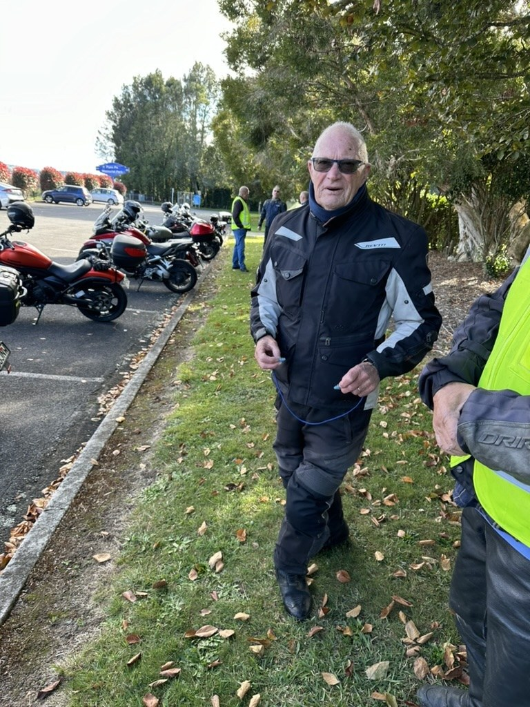
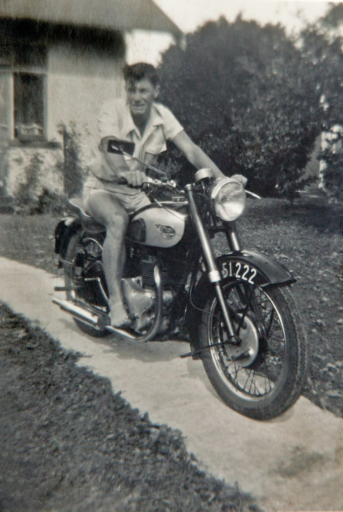
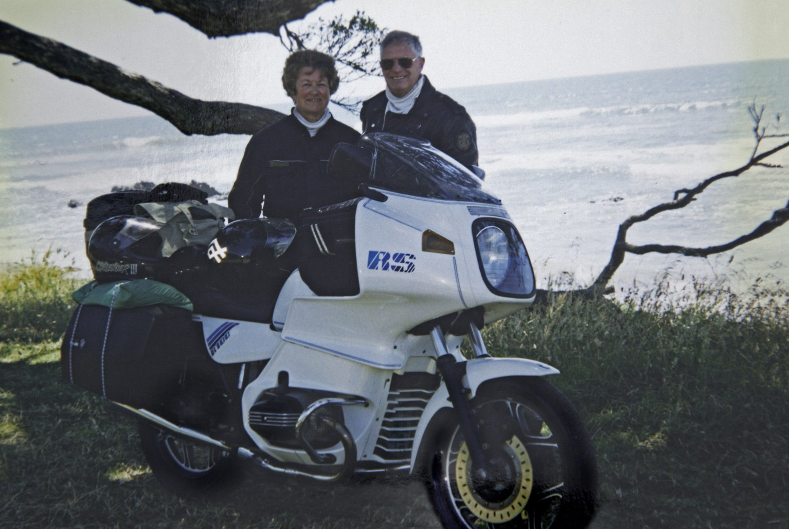
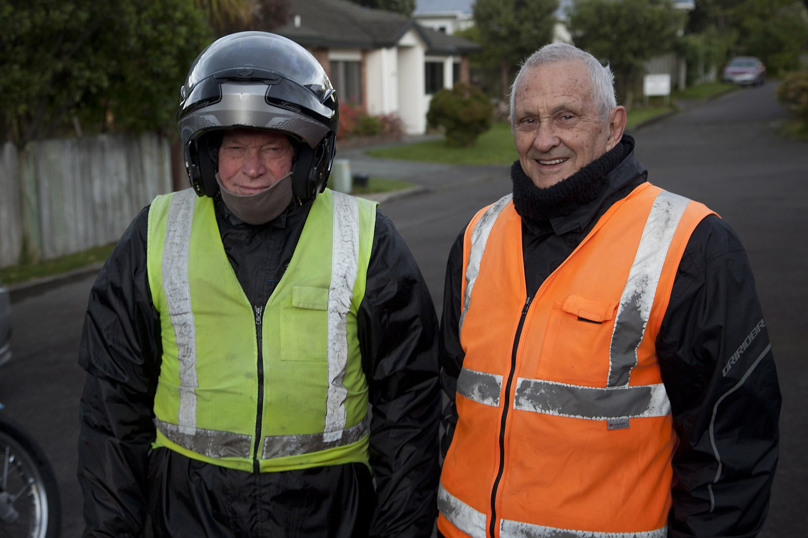
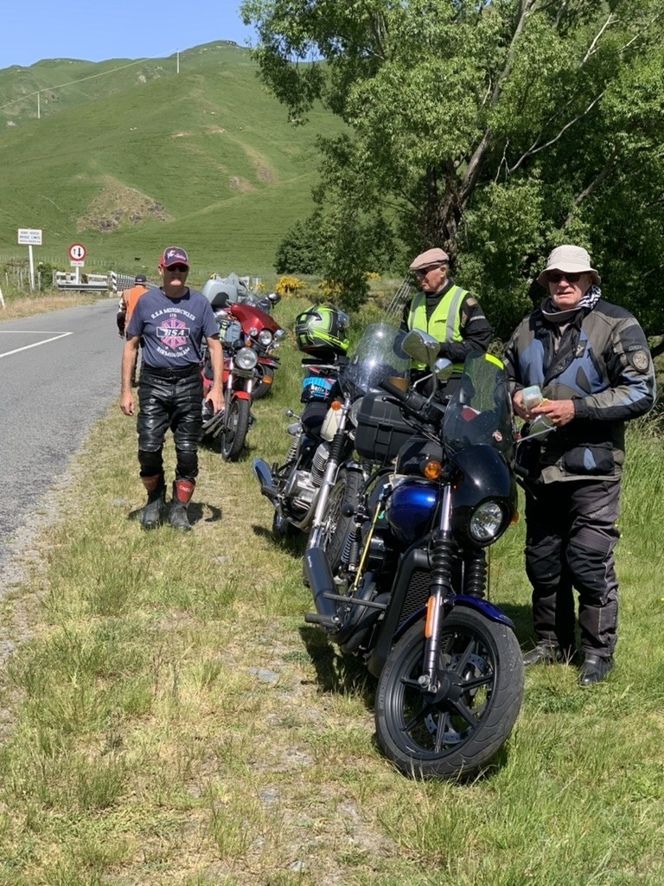
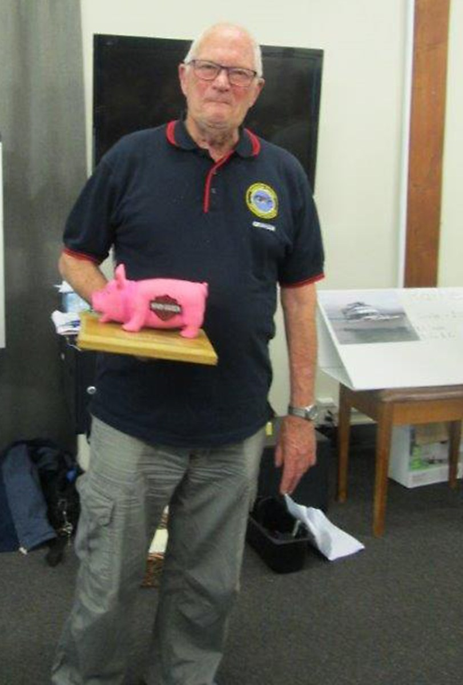
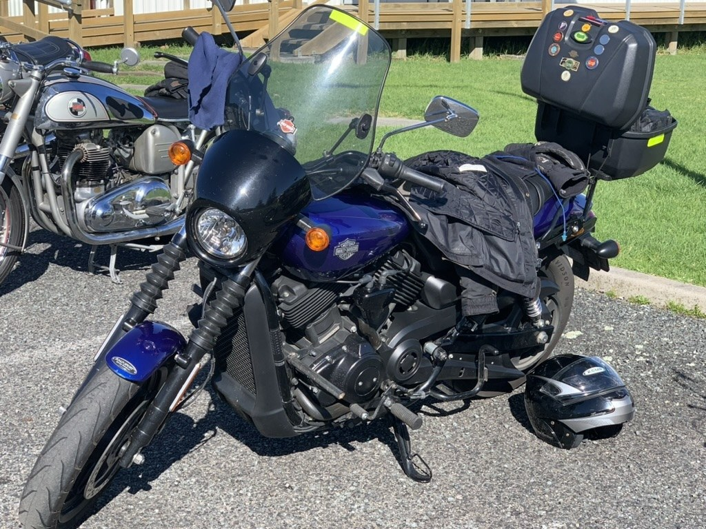
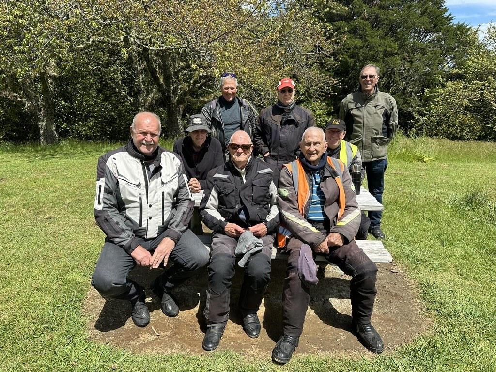

For many Tauranga Classic Motorcycle Club members, Graham has been the familiar figure at the head of the Wednesday rides. Meet up, choose a good road, pack some lunch and enjoy the company. With Graham usually showing the way, it became a regular pleasure shared by a loyal group of riders.
Now he has decided it is time to finish riding. It is a milestone worth marking, both for Graham and for the friends who have shared so many miles with him.
It began with “Val”
In his 2018 club newsletter profile, Graham recalled being captivated as a youngster by photographs of a water-cooled Velocette LE. He called her “Val”, keeping one photograph on his bedroom wall and another under his pillow.
His mate Lou taught him to ride on a 350 Matchless single. Graham’s own first motorcycle was a BSA C11, despite his mother threatening to put sugar in the petrol tank if he brought a bike home. A B33 followed, carrying him away from home with Lou and eventually to Wellington. After compulsory military training, he bought a BSA Goldflash.

Then came Ann. Graham told the story with characteristic humour: he went to watch the marching girls in Tauranga, met Ann, and his plans to return to Wellington never quite happened.
Family and building work in Cambridge brought a long break from motorcycles. After Graham and Ann moved back to Tauranga in 1990, Bob Crabb encouraged him to try a Matchless G9. The enthusiasm came straight back. Joining the club even brought a reunion with his youthful fascination: Charley Belk was riding the kind of Velocette Graham remembered as “Val”.
Good roads, good company
Over the years there were BSAs, an AJS, several BMWs, a Yamaha, a Suzuki and eventually the Harley. Among Graham’s fondest memories were Christmas trips around the East Cape with Ann and Ray and Shirley Knowles. They travelled on their BMWs, carrying pup tents and camping along the way.

Ray remembered the familiar circuit: Tokomaru Bay, then Wairoa, then home through Taupo. In 2002 the two couples also toured the South Island together, taking their bikes and tents and covering much of the island.
Those friendships appear again and again in the club’s stories. Stan Holdem named his journey to the 2016 Nelson National Rally with Graham and Lloyd Baker as his best ride. Crossing Cook Strait and meeting fellow riders made it a trip to remember.

Alan Roberts also recalled a South Island and Burt Munro adventure with Graham and a group of club mates as a favourite. Seventeen days away provided plenty of stories, including southern winds strong enough to blow both Alan and Graham across the road.
Wednesdays with Graham
Closer to home, the Wednesday rides became a fixture. The March 2023 newsletter described a core of about ten regular riders, with others joining when they could. Graham took the lead on most days, setting a leisurely pace through the countryside.

Lunch was part of the occasion: somewhere to stop, unpack a sandwich and put the world to rights. Then came the next decision. Head home, or make a longer day of it? There was usually another back road worth taking.
A Harley, and a little friendly ribbing
When Graham bought his new Harley-Davidson, his Friday mates made sure the occasion received proper recognition. At the 2017 Epworth rally, John Whitcombe presented him with a specially made “Hog Award”.


Graham gave as good as he got. One club-run report records his assurance that he would not need the backup trailer - he rode a Harley!
His contribution went beyond the rides. Clubroom history records Graham among the members who helped restore the building, another part of the shared effort that keeps a club going.

Graham’s decision to stop riding closes a remarkable chapter. The recent photographs belong alongside the early bike pictures, camping memories and rally gatherings: a record of a life in which motorcycles brought people together.
Thank you, Graham, for the miles, the company and the memories. At 91, you have certainly earned the right to let someone else lead the next ride.